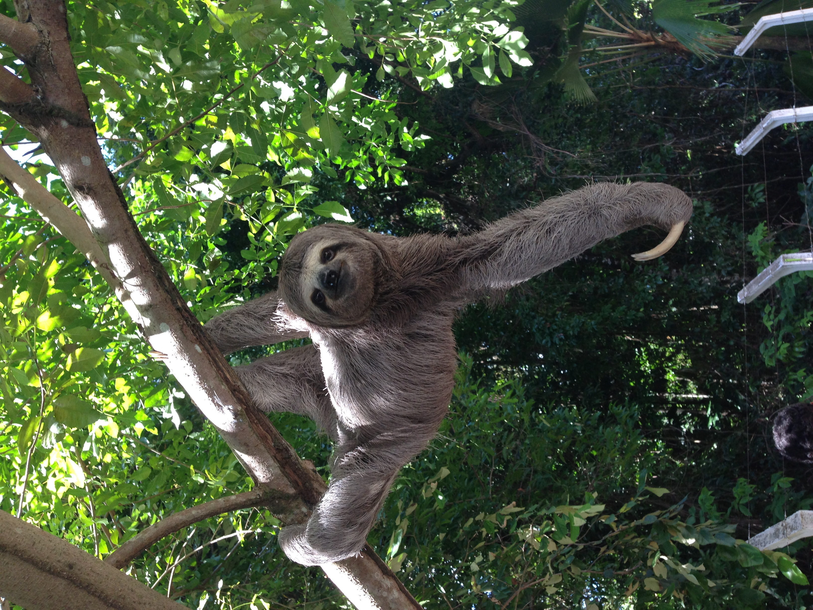
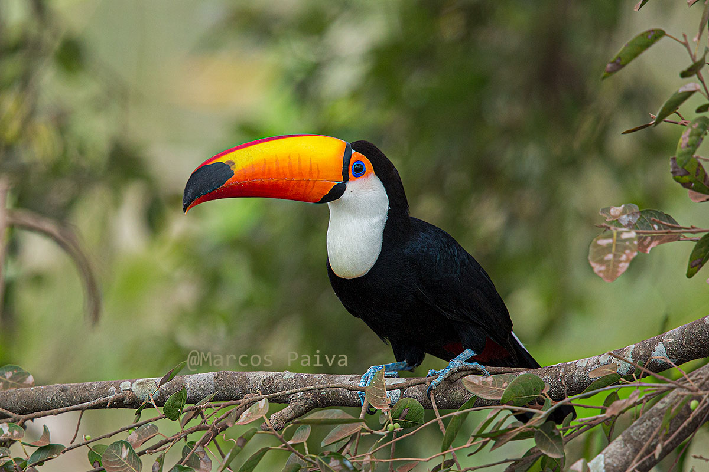
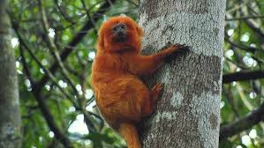
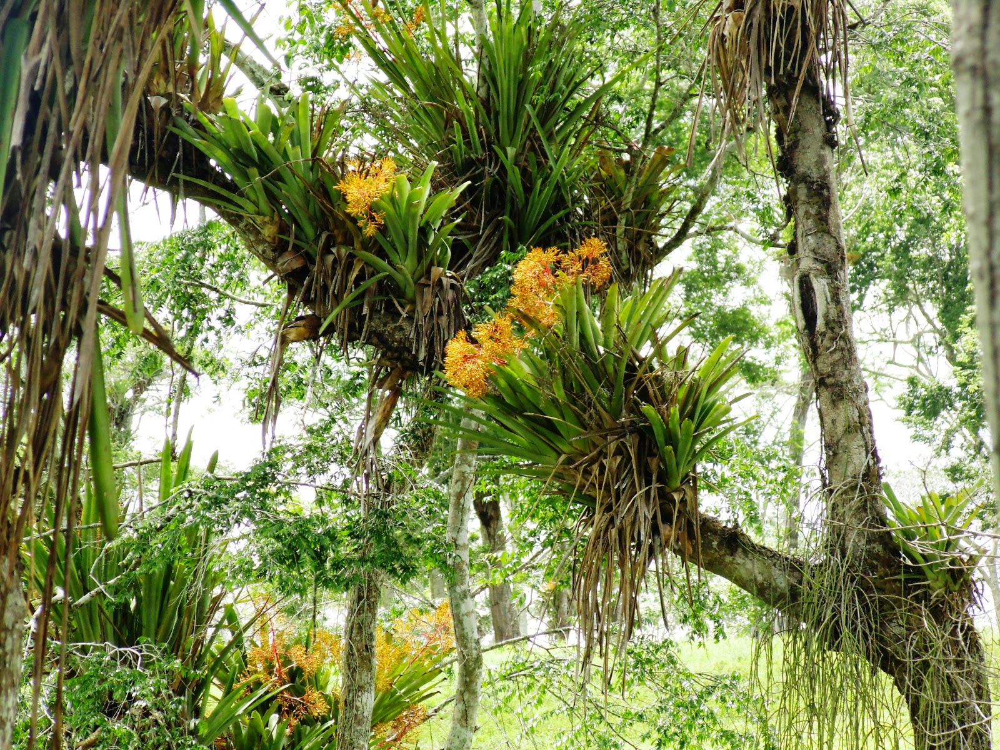
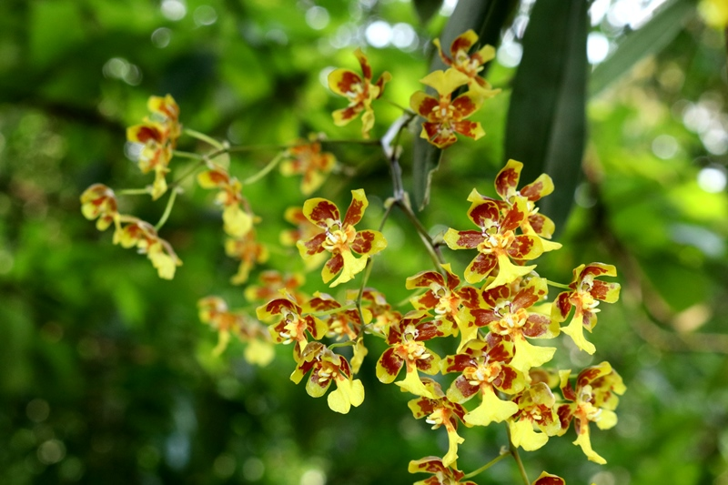

Biodiversidade de Teresópolis
Fauna

Bixo preguiça
Espécie endêmica da Mata Atlântica, ameaçada de extinção e símbolo da conservação.

Tucano-toco
Ave exuberante com plumagem colorida, facilmente avistada nas florestas da região.

Mico-leão-dourado
Espécie endêmica da Mata Atlântica, ameaçada de extinção e símbolo da conservação.
Flora

Bromélia
Plantas ornamentais que se destacam pela diversidade de formas e cores, essenciais para o ecossistema.

Orquídea
A vasta família das orquídeas apresenta espécies nativas de beleza singular na região.